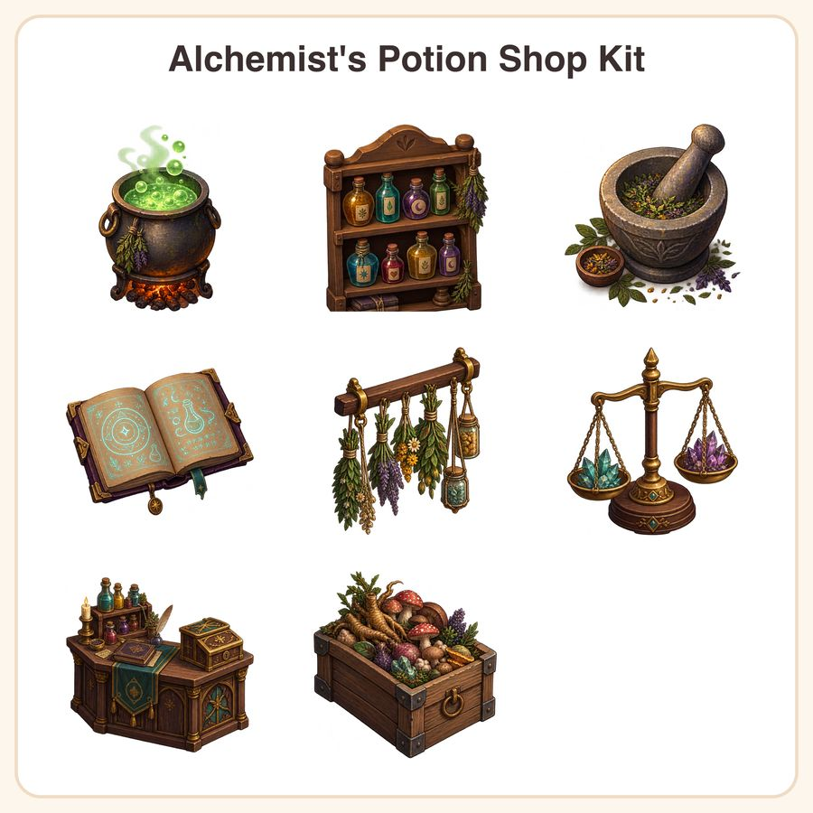

$6.99
View on EtsyGive your cozy crafting or shopkeeper sim a warm, hand-painted look without hiring an artist! This kit drops right into your project so you can start building your potion shop scene today. What's included (8 unique sprites, 16 files total): - Bubbling cauldron with glowing green potion - Wooden shelf lined with labeled potion bottles - Mortar and pestle with crushed herbs - Glowing rune-etched spellbook, open - Hanging dried herb bundles and jars - Brass scale weighing crystal shards - Ornate potion counter with cash box - Ingredient crate stuffed with roots and mushrooms Each sprite comes in: - 1024x1024px transparent PNG (high-res, great for zoom/close-ups) - 512x512px transparent PNG (game-ready size) - Plus one handy preview sheet showing all sprites at a glance Style: warm, hand-painted pixel-adjacent HD sprites with soft gouache-style shading, a muted jewel-tone palette (amber, teal, plum), and a consistent 3/4 top-down light source for easy scene assembly. How to use: import straight into Unity, Godot, GameMaker, RPG Maker, or any engine that supports transparent PNGs. Great for shop interiors, crafting UI, inventory icons, or decor props. License: for personal projects and small commercial use, including games you sell or publish, up to 500 units/copies. Please don't resell, redistribute, or share the raw asset files themselves, as a pack or individually. Honest note: these designs were created in my shop with the help of AI image tools, then curated and prepped for game-ready use. Not hand-drawn or hand-painted by hand, just styled to look that way. Questions before you buy? Message me anytime, happy to help you plan your shop scene!